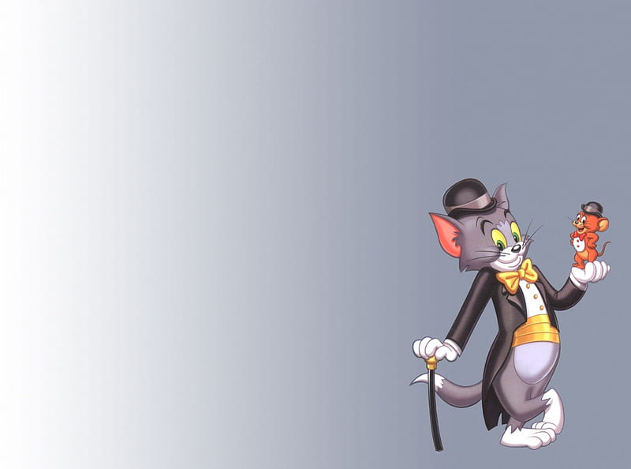
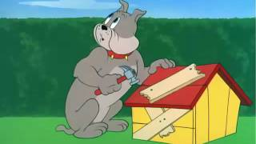

TOM
Tom, the feline protagonist in the animated series "Tom and Jerry," is a bumbling but determined cat who perpetually finds himself in a never-ending chase with Jerry, the clever mouse. Tom's character is characterized by his comically futile attempts to catch Jerry, often resulting in humorous mishaps and slapstick comedy. Despite his cunning schemes and elaborate traps, Tom frequently falls victim to Jerry's quick wit and agility. Despite being the "villain" in the traditional sense, Tom's endearing .
JERRY
Jerry, the quick-witted and resourceful mouse in the animated series "Tom and Jerry," is the perpetual foil to Tom's attempts at catching him. Despite his diminutive size, Jerry consistently outsmarts Tom with his cleverness and agility, turning every chase into a comedic escapade. Jerry is known for his mischievous nature and ability to outmaneuver Tom's elaborate schemes, making him the endearing hero of the series. His character is defined by a combination of intelligence, resilience, and a charming sense of mischief. Audiences of all ages have been captivated by Jerry's antics, making him an iconic and beloved figure in the world of animation.
